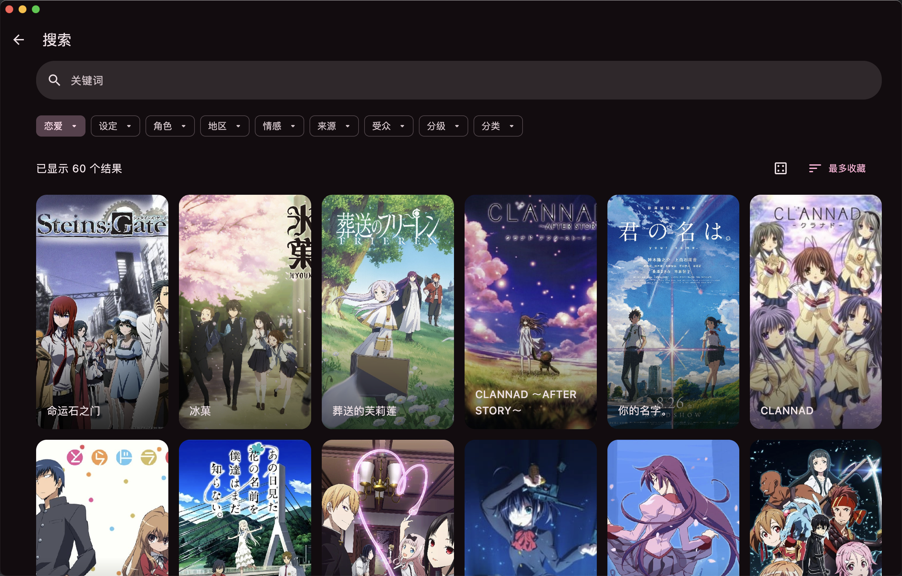
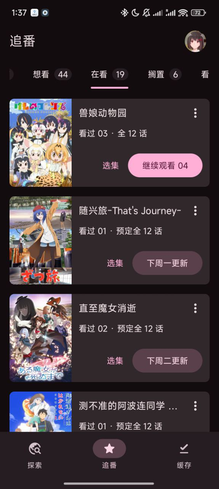

用了 Animeko 两年才挖透——那些藏得真深的追番体验彩蛋
Animeko 不只是一个在线看番的壳子，翻到底层能挖出好几个官方不怎么宣传的隐藏功能：自动跳 OP/ED、画面拉伸四档切换、离线缓存静默同步……每一个都在悄悄改变追番的爽感上限。
引子：你以为它只是个"又一个看番的"？
说实话，刚开始在Animeko官网上手时我也这么想——网页版、聚合几个源、能看弹幕，和市面上一堆同类比起来没什么新鲜的。但架不住它更新勤快，从官方下载拿到安装包后 v5.x 一路迭代下来，我在各种犄角旮旯里挖到好几个"官方都不单独写进更新日志亮点"的功能。
这些东西不是什么惊天动地的大模块，但就是那种"你一旦知道了就再也回不去"的体验细节。今天把我翻了两年才攒到的私藏全说出来。
隐藏功能一：自动跳 OP/ED——不是手动标记，是服务端替你记了时间
这个功能藏得有多深？开关在播放页的设置面板里，不是全局设置，而且默认是关的。我是某次连追新番时手滑点了播放页的齿轮图标才发现的。
原理比我想象的狠——Animeko 内置了一份 OP/ED 时间标记数据库，不是让用户自己拉进度条标记，而是服务端维护的。播放某一集时自动匹配这部番在数据库里有没有标记，有就到点直接跳。
覆盖范围是"部分新番"，官方没吹这个，但当季热门番基本都有，冷门新番和老番就别指望了。不过有了就是巨大体验提升——我之前追某个 24 集的新番，每集 OP 两分半、ED 一分半，全程手动拖进度拖了 12 次，发现这个功能后后半季直接连播加自动跳，一次操作都没做。
要注意和"连播下一集"是两个独立开关，分开的好处是你可以只开连播不开跳，或者只开跳不开连播。两个一起开就是真正的"全自动追番模式"。
隐藏功能二：画面拉伸四档——老番党会哭的
v5.3.1 加的，藏在同一个播放页设置面板里。四种填充方式不是简单的"拉伸/不拉伸"二选一：
- 保持比例——老番 4:3 在宽屏上左右黑边，画质完全不伤
- 裁剪填充——画面填满屏幕但裁掉一点边缘，适合不介意损失半帧画面的人
- 水平拉伸 / 垂直拉伸——只拉一个方向，用来修正那些本身就被源拉伸过的奇怪比例
桌面端还能快捷键快速切换——不用打开设置面板，按几下就能找到最舒服的填充方式。这个偏好是本机存的，不会跟着 Bangumi 账号同步，但可以通过 v5.1.0 起就有的"导入导出设置"搬到新设备上。
经典老番的 4:3 画面在 16:9 屏上永远是个问题，要么黑边要么变形，Animeko 这四档给了中间地带——裁剪填充牺牲一点边缘换满屏体验，保持比例留黑边换画质，自己选。

隐藏功能三：离线缓存 + 静默同步——地铁上看完一整季，联网后自动写进 Bangumi
这个我用了快一年才搞明白完整逻辑。Animeko 绑定 Bangumi 账号后，观看进度的默认行为是自动同步，但离线场景的处理藏得很深：
完全断网时（地铁、飞机、深山老林），进度更新先写在本机数据库里——你看完一整集、看到第 5 集第 12 分 34 秒，这些都先存着。恢复网络后，Animeko 在后台静默把积压的进度推送到 Bangumi，通常几秒就完，完全不打扰你正在看的内容。
所以"离线缓存看番会不会丢进度"这个问题的答案是：不会，联网自动补。唯一的前提是登录态没过期——登录态过期需要联网刷新，离线状态下过期了就暂时不能同步，等联网再登录一次就行。
还有一个冷知识：多设备同时看同一部番时，Bangumi 取的是最大进度——A 设备看到第 5 集、B 设备看到第 8 集，两边最终都会显示第 8 集。这个逻辑是 Bangumi 侧的，不是 Animeko 决定的，但知道了就不会在设备之间切换时困惑"我的进度怎么跳了"。

隐藏功能四：缓存可以跨版本升级——踩过一次坑才知道升级前要备份
这个严格来说不是"隐藏功能"，是一个避坑点——但知道了就能省一堆麻烦。
v5.3.1 做过一次缓存引擎重构，官方更新日志里用感叹号加粗提醒：「更新会导致缓存失效，请提前备份」。旧缓存格式和新引擎完全不兼容，升级后所有旧缓存自动清理，而且备份了也没用——格式不兼容，新引擎认不出来。
那次我直接升了，几百集缓存没了，还花了一周重新下冷门番才补回来。后来养成了一个习惯：升级前扫一眼更新日志，重点看有没有「缓存/数据相关的重大变更」「需要手动操作的一次性步骤」「标了感叹号或 ⚠️ 的警告」。Animeko 的中文文档里把这些注意事项都整理好了，花 30 秒能省好几个小时。
好消息是 v5.3.1 之后引擎稳定了，后续版本（v5.3.2 → v5.4.x → v5.5.x → v6.x）的升级不会再清缓存，以后不用再怕了。
隐藏功能五：弹幕也缓存——离线也能看到上次的弹幕池
这个没写在任何更新日志里，是我某次断网看缓存视频时偶然发现的：Animeko 会把弹幕缓存文件和视频一起存，离线看缓存的时候，上次加载的弹幕还能正常显示。
弹幕缓存是本机文件，换设备不会同步——但在同一设备上，离线看番体验是完整的：视频、弹幕、进度、甚至上次的播放位置，全在。
要注意的是弹幕缓存和视频缓存是分开的，如果你手动清理缓存时只删了弹幕缓存，离线看就没有弹幕了。设置里可以分开管理这两类缓存。
收尾：把它用透的态度
Animeko 这种产品，好用的地方从来不是"它有某某功能"，而是"你能不能在它给的所有选项里找到最适合自己的那个组合"。自动跳 OP/ED + 连播 + 离线缓存 + 静默同步，这四个开一起就是"拿起来就能看、放下自动续、换设备无缝接"的追番闭环。
挖隐藏功能这件事本身就是一种乐趣——每个版本更新都值得翻一遍设置面板，说不定又藏了什么新彩蛋。
Animeko 的核心资料在公开仓库也能拿到，GitHub、Gitee、GitCode 三个镜像仓库都同步维护了完整的中文文档和版本记录，跨平台用户选哪个方便下哪个就行。